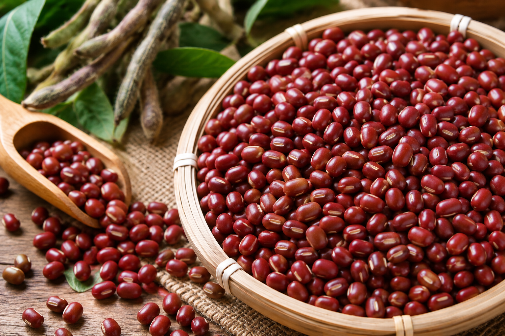

陽光果園｜一顆芒果的夏日練習
芒果不只是水果，也是農民與氣候、時間、技術共同完成的作品。學生嘗試用品牌語言說出產地故事。
閱讀故事讓學生透過採訪、攝影、AI創作與圖文整理，協助更多在地農民與農產品被看見。 這裡不是商城，而是一個農業故事與品牌教育展示平台。
用 AI 與學生創作，重新看見農業的價值。
以下為示範卡片，之後可替換成學生與農民的真實故事。
本平台歡迎學生以採訪、照片、AI創作與文字整理方式，記錄家鄉農業、家庭農場與在地農民故事。
進入 AI農業創作教學系統